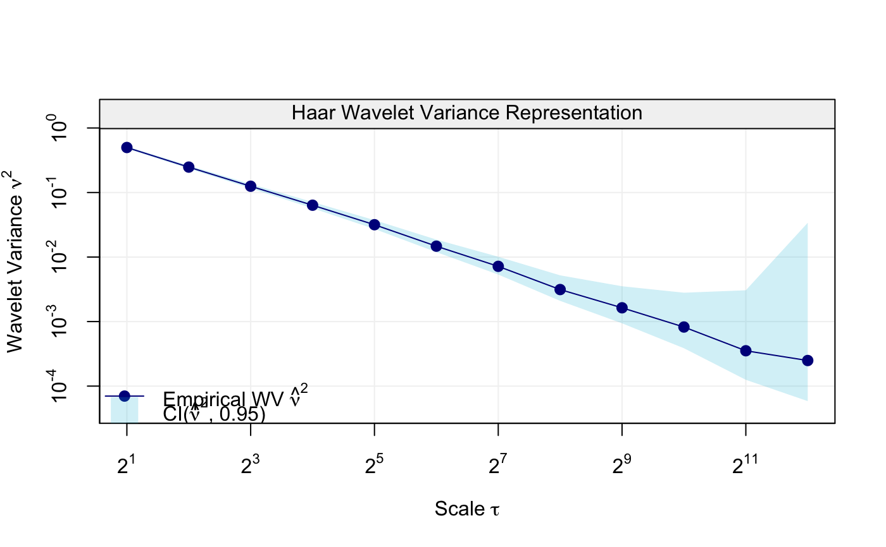
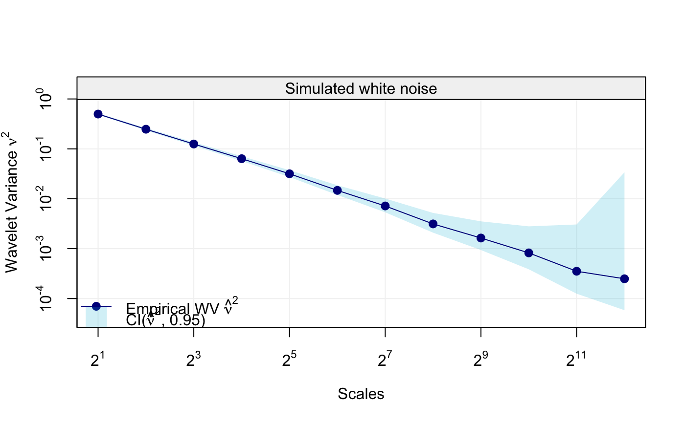
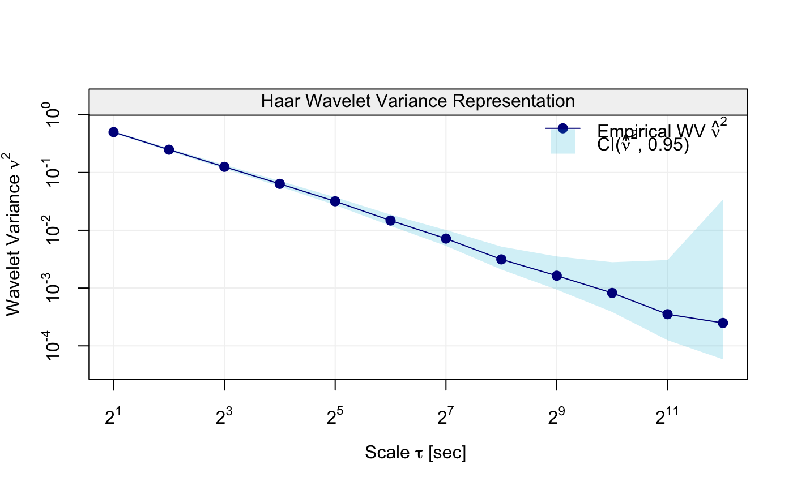
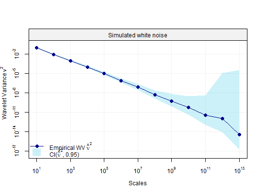

Displays a plot of wavelet variance accounting for CI values and supplied efficiency.
# S3 method for wvar plot(x, units = NULL, xlab = NULL, ylab = NULL, main = NULL, col_wv = NULL, col_ci = NULL, nb_ticks_x = NULL, nb_ticks_y = NULL, legend_position = NULL, ci_wv = NULL, point_cex = NULL, point_pch = NULL, ...)
| x | A |
|---|---|
| units | A |
| xlab | A |
| ylab | A |
| main | A |
| col_wv | A |
| col_ci | A |
| nb_ticks_x | An |
| nb_ticks_y | An |
| legend_position | A |
| ci_wv | A |
| point_cex | A |
| point_pch | A |
| ... | Additional arguments affecting the plot. |
Plot of wavelet variance and confidence interval for each scale.
plot(wv, main = "Simulated white noise", xlab = "Scales")plot(wv, units = "sec", legend_position = "topright")plot(wv, col_wv = "darkred", col_ci = "pink")